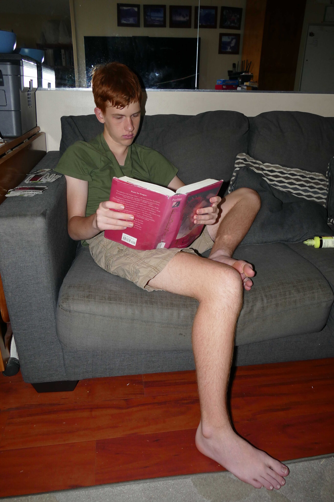
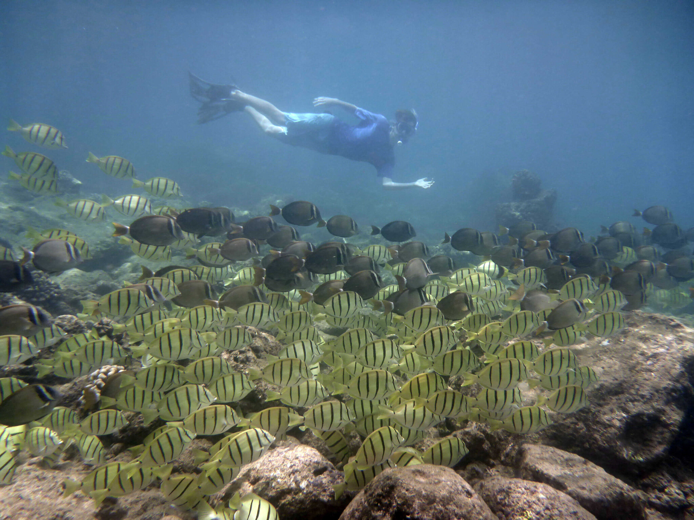
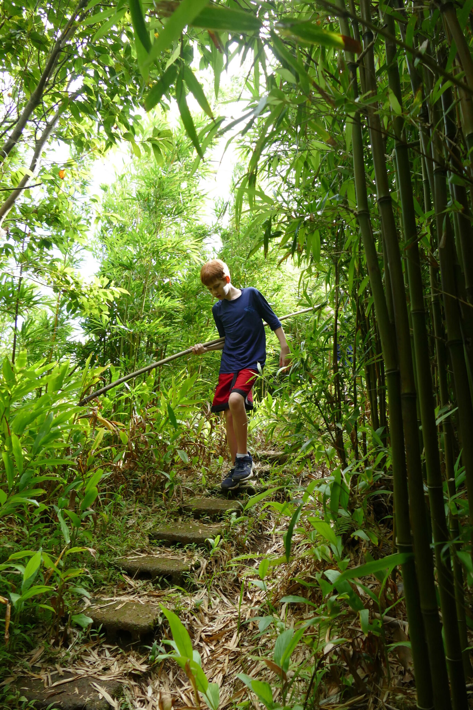

- Reading Books
- A hobby that I have is reading books. During
the summer, I read lots of books that I check out from the library.
The genre of books I read is mostly fiction and fantasy. My favorite books include:
- Eragon series
- Books by Brandon Mull
- Percy Jackson series
- Ranger's Apprentice series
- Harry Potter series
- Playing the Piano
- Another hobby of mine is that I play the piano.
I take piano lessons through the Masaki School of music.
- Swimming
- I like to go swimming, whether it is in a pool or snorkeling in beaches around the island.
While snorkeling I have seen lots of interesting underwater sea life.
- Hiking
- During the summer I go on hikes with my family. I like to walk through the trees and enjoy the scenery.
- Tubing
- Over the summer we usually go to Texas where we visit family. While we are there we usually go tubing at a lake.
|



|